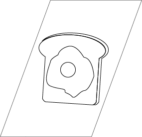
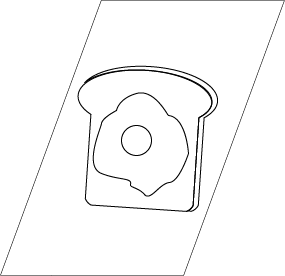
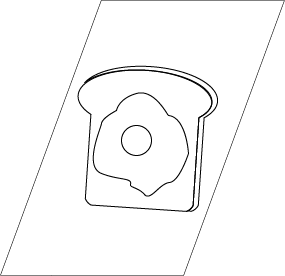

Ugh... What time is it? Only 7:30AM...? It's still so early. I don't have class until 9 today.
Five more minutes... Mom hasn't come in to get me up anyway.
This project is a game about facing depression. It is an attempt to create more awareness to the issues that is becoming more common in teenagers and young adults as they face more responsibilities and forge new relationships. The player will go through a story and make decisions based on what they think will be the best choice one should make given the circumstances that they are trying to make healthier choices in learning to cope with their illness. For more information, there is a separate page on depression.
Click on the mouse to switch through the text/story and follow along. There will be times to click on one out of two options to continue the story. Think wisely before picking, as you can’t go back after making your decision! To restart the game, refresh the browser.
**DISCLAIMER** This game is not playable on mobile devices at its current state, and is best for screens at size 1366 x 768.
Depression is a mood disorder in which the affected individual may have feelings such as hopelessness, sadness, dejectedness, or other negative feelings that greatly affect the way the person thinks, feels, and acts on a daily basis. It makes one feel perhaps like a hindrance on others, that they aren’t loved or needed. It hinders their working habits, sleeping habits, and even eating habits.
Some treatments involve going to see a counselor or therapist in order to get their recommendations and help. Doctors can also prescribe medication (antidepressants) to treat the disorder, and these may take a few weeks to work, but they come with side effects. Other treatments have been to channel the negative energy into creative means in order to put attention elsewhere rather than dwelve in bad feelings. Some individuals also join groups where they discuss their problems and have others there who understand them and help them get through their problems.

Ugh... What time is it? Only 7:30AM...? It's still so early. I don't have class until 9 today.
Five more minutes... Mom hasn't come in to get me up anyway.